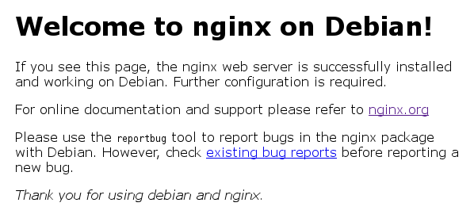
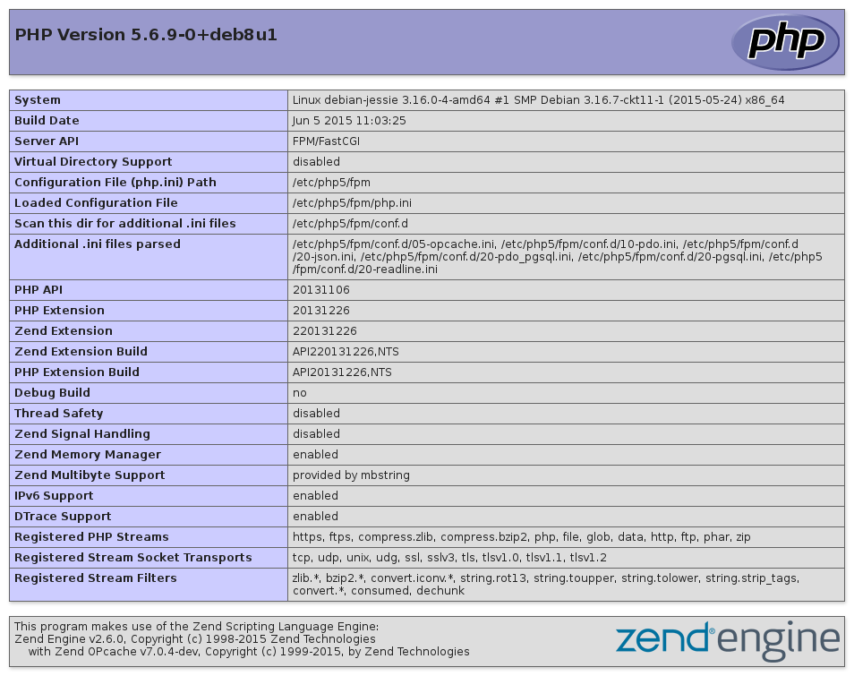

Un serveur web permet de délivrer des pages que vous pouvez consulter via votre navigateur. C'est certainement la part la plus visible d'internet.
Il en existe plusieurs, le plus connu est apache mais il peux demander beaucoup de ressources pour être utilisé sachant que nous n'utiliserons pas la moitié de ses fonctionnalités. J'ai opté pour nginx mais si vous êtes curieux, il en existe d'autres :
Même si un serveur web est suffisant pour publier quelques pages en HTML, si vous souhaitez par la suite installer des logiciels tel qu'un blog ou un forum vous aurez également besoin d'une base de données et d'un langage de programmation tel que PHP.
J’ai choisi PHP car c’est celui que je maitrise le mieux et sa popularité vous assure de trouver un grand nombre de logiciels.
Les trois étant très souvent installés en même temps, nous allons en faire de même afin que vous disposiez, la fin de ce chapitre, d'un serveur web digne de ce nom.
Commençons par installer notre serveur HTTP :
# apt-get install nginx
Au niveau de la configuration de notre serveur, vous pouvez commencer par ouvrir
le fichier /etc/nginx/nginx.conf qui contient la configuration globale du
serveur. Dans le cadre d'une utilisation normale, il n'est pas utile de modifier
ce fichier.
Les parties intéressante de la configuration de nginx se trouve dans les
répertoires /etc/nginx/conf.d pour les modules qui impacts tous les sites
(typiquement TLS) et /etc/nginx/sites-available/ pour les
configuration liés à chaque site. Nous y reviendrons une fois tous les autres
composants installés.

Concernant la base de données, je vous propose un peu d’originalité. Normalement j’aurais du vous présenter MySQL, sauf que son installation est extrêmement simple mais suretout je préfère vous faire découvrir une base de données Libre et communautaire qui vous fera retrouver foi dans le SQL1.
L'installation se passe de commentaire :
# apt-get install postgresql postgresql-client
Si l’installation n’a rien de compliquée, sa configuration a pour réputation de l’être. Dans un premier temps je me suis contenté de la configuration par défaut sans que cela me pose de problème (on reste sur des applications de tailles modestes), mais après avoir découvert l’outils pgtune il n’y a pas de raison de se priver de quelques optimisations :
Avec PostgreSQL c’est l’utilisateur postgres qui possède tous les droits. Afin
de nous simplifier la vie, nous pouvons créer un utilisateur pour PostgreSQL
avec le même nom que notre utilisateur système :
$ sudo -u postgres createuser --interactive
Enter name of role to add: sanpi
Shall the new role be a superuser? (y/n) y
Nous pouvons maintenant créer notre première base de données :
$ createdb sanpi
Ainsi nous pouvons nous connecter directement :
$ psql
psql (9.4.3)
Type "help" for help.
sanpi=# \?
…
Le dernier élément, le langage de script PHP. Il s'agit de la phase de l'installation la plus compliquée (ça reste relatif…) puisqu'il va falloir faire le lien entre le serveur HTTP, PostreSQL et PHP.
Commençons par installer l'interpréteur, mais nous avons également besoin du module pour PostreSQL :
# apt-get install php5-fpm php5-pgsql
Pour la configuration, vous pouver lire le fichier /etc/php5/fpm/php.ini mais
il ne faut pas le modifier directement2. Créez simplement un fichier
/etc/php5/mods-available/custom.ini qui contient vos modifications :
date.timezone = Europe/Paris
opcache.enable = 1
opcache.save_comments = 1
opcache.load_comments = 1
Et activer cette configuration pour FPM :
# ln -s /etc/php5/mods-available/custom.ini /etc/php5/fpm/conf.d/99-custom.ini
FPM est l’une des manières d’intéragir avec PHP, vous avez peut être déjà entendu parler de CGI ? Cette SAPI se veux simple et robuste. En tant d’utilisateur, je retiens surtoût la possibilité de faire tourner PHP avec un utilisateur arbitraire ce qui vous nous éviter beaucoup de soucis de gestion de droits.
# cp /etc/php5/fpm/pool.d/{www,sanpi}.conf
Ensuite éditez le fichier pour modifier le nom de la réserve, l’utilisateur et le nom du fichier d’écoute :
# sed -i 's/\[www\]/[sanpi]/g' /etc/php5/fpm/pool.d/sanpi.conf
# sed -i 's/www-data/sanpi/g' /etc/php5/fpm/pool.d/sanpi.conf
# sed -i 's/php5-fpm\.sock/php5-sanpi.sock/g' /etc/php5/fpm/pool.d/sanpi.conf
Et redémarrez le service :
# systemctl restart php5-fpm.service
À ce stade là, si vous essayez d'afficher une page écrite en PHP, le serveur vous proposera de télécharger le fichier, ce n’est pas vraiment le comportement attendu… Tout simplement parce que nous ne l'avons pas configurer pour qu'il fasse appel à PHP.
On commence par supprimer le site par défaut :
# rm /etc/nginx/sites-enabled/default
Créons un nouvel hôte virtuel (virtual host) :
# cat > /etc/nginx/sites-available/php-test <<EOF
server {
listen 80 default_server;
listen [::]:80 default_server;
root /home/sanpi/public_html/test;
index index.php;
server_name _;
location ~ \.php$ {
include snippets/fastcgi-php.conf;
fastcgi_pass unix:/var/run/php5-sanpi.sock;
}
}
EOF
Un script PHP minimal pour vérifier que cela fonctionne :
$ mkdir -p /home/sanpi/public_html/test
$ cat > /home/sanpi/public_html/test/index.php <<EOF
<?php
phpinfo();
EOF
Et enfin rechargeons nginx pour qu’il prenne en compte la nouvelle configuration :
# ln -s /etc/nginx/sites-{available,enabled}/php-test
# systemctl reload nginx.service

Votre serveur est maintenant fonctionnel, il ne vous reste plus qu'à trouver des applications pour l'occuper. Comme je le précisais en introduction, le choix de PHP n'est pas innocent c'est le plus populaire dans ce domaine, vous trouverez donc des milliers d'applications libres pour créer un blog, un forum, héberger des images, … Inévitables dans le lot, il existe des applications en cours de développement, des applications buguées, bref il faut généralement en tester quelques unes avant de trouver celles qui vous convient.
Voici donc une liste, non exhaustive, d'applications pour fournir les principaux services :
Vous pouvez vous reporter aux annexes pour un exemple d’installation.
1 Parce que vous n’utilisez plus Windows 3.1, pourquoi continuer à se limiter au SQL-92 : http://use-the-index-luke.com/blog/2015-02/modern-sql
2 À la prochaine mise à jour de PHP, vous allez devoir faire la liste des modifications pour mettre à jour la configuration.